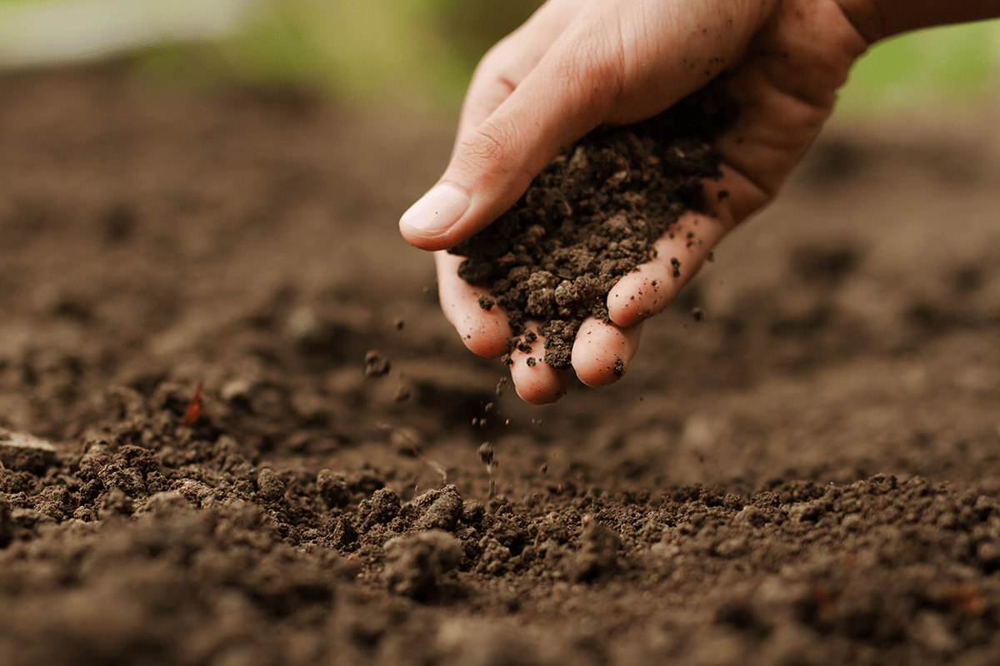
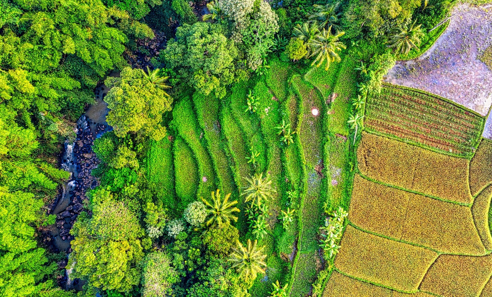
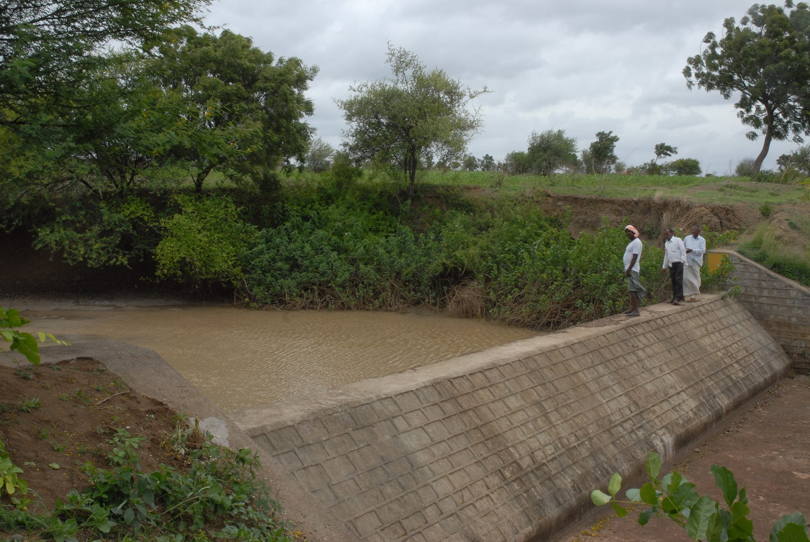

Sustainable Land Use Practices
Sustainable land use practices encompass a diverse array of strategies aimed at managing land resources in a manner that ensures environmental integrity, social equity, and economic viability. These practices prioritize the long-term health and productivity of ecosystems while meeting the needs of current and future generations.
One key aspect of sustainable land use practices is soil conservation. Methods such as conservation tillage, cover cropping, and agroforestry help to protect soil structure, prevent erosion, and maintain fertility, thereby ensuring the sustainability of agricultural production. Additionally, rotational grazing and proper pasture management techniques promote healthy grasslands and reduce the risk of overgrazing, preserving biodiversity and ecosystem services.
Moreover, sustainable land use practices emphasize the importance of preserving natural habitats and biodiversity. This includes initiatives such as reforestation, habitat restoration, and the establishment of protected areas to conserve ecosystems and safeguard endangered species.
Water resource management is another critical component of sustainable land use. Practices such as integrated watershed management, riparian zone protection, and water-efficient irrigation systems help to conserve water, enhance water quality, and mitigate the impacts of drought and flooding.
Ultimately, sustainable land use practices seek to balance human needs with the capacity of ecosystems to regenerate and support life. By adopting these practices, communities can promote environmental stewardship, foster resilience to climate change, and ensure the well-being of both people and the planet.
Vegetative Cover And Soil Conservation
Vegetative cover and soil conservation are integral components of sustainable land management practices, aimed at protecting soil health, enhancing ecosystem resilience, and promoting long-term environmental sustainability.
Vegetative cover refers to the presence of vegetation, such as trees, grasses, and cover crops, that blankets the soil surface. This cover plays a crucial role in preventing erosion by reducing the impact of rainfall, minimizing surface runoff, and stabilizing soil structure. Additionally, plant roots help to bind soil particles together, preventing them from being washed away by water or blown away by wind.
Soil conservation involves various techniques and practices designed to minimize soil erosion and degradation. Conservation tillage methods, such as no-till or reduced tillage, disturb the soil less, preserving its structure and organic matter content. Cover cropping involves planting crops during fallow periods to provide continuous vegetative cover, protecting the soil from erosion and improving soil fertility.
Agroforestry integrates trees and shrubs into agricultural landscapes, providing additional vegetative cover and contributing to soil conservation. Furthermore, contour plowing, terracing, and the establishment of buffer strips along waterways are effective erosion control measures that help to slow down runoff and trap sediment before it reaches water bodies.
By promoting vegetative cover and implementing soil conservation practices, communities can safeguard soil resources, protect water quality, and maintain the productivity and resilience of agricultural and natural ecosystems for future generations. These practices are essential for mitigating the impacts of erosion, preserving biodiversity, and promoting sustainable land use.
Watershed Management And Erosion Control
Watershed management and erosion control are critical components of sustainable land management practices, focused on protecting water resources, preventing soil loss, and mitigating the impacts of erosion within a watershed.
Watershed management involves the integrated management of land, water, and natural resources within a defined geographic area that drains into a common water body. This approach considers the interconnectedness of upstream and downstream areas, aiming to balance competing demands for water while maintaining ecosystem health and resilience. Key strategies include land-use planning, riparian zone protection, and the implementation of Best Management Practices (BMPs) to minimize pollution and preserve water quality.
Erosion control measures are implemented to reduce the loss of soil from erosion processes, such as sheet erosion, rill erosion, and gully erosion, which can degrade land and degrade water quality. Techniques such as terracing, contour plowing, and the installation of erosion control structures like check dams and silt fences help to slow down water runoff, trap sediment, and stabilize slopes. Additionally, restoring vegetation and implementing sustainable land management practices can enhance soil stability and reduce erosion risk.
By effectively managing watersheds and implementing erosion control measures, communities can protect valuable water resources, preserve soil health, and mitigate the impacts of erosion on downstream ecosystems and infrastructure. These practices are essential for promoting resilience to climate change, ensuring sustainable water management, and maintaining the health and productivity of landscapes for current and future generations.
